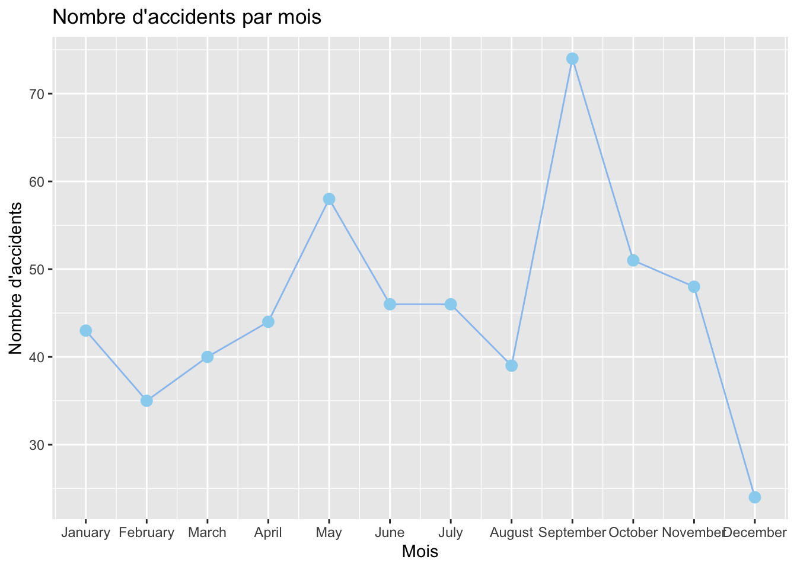
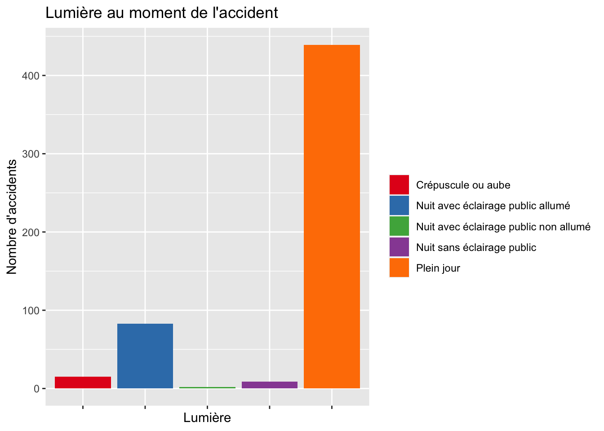
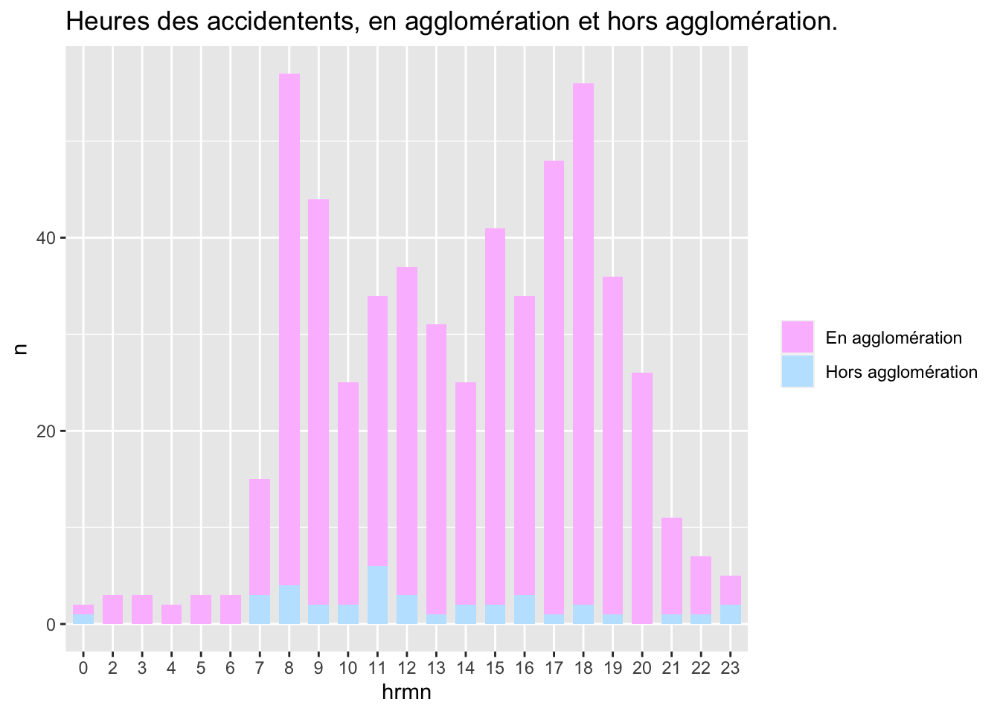
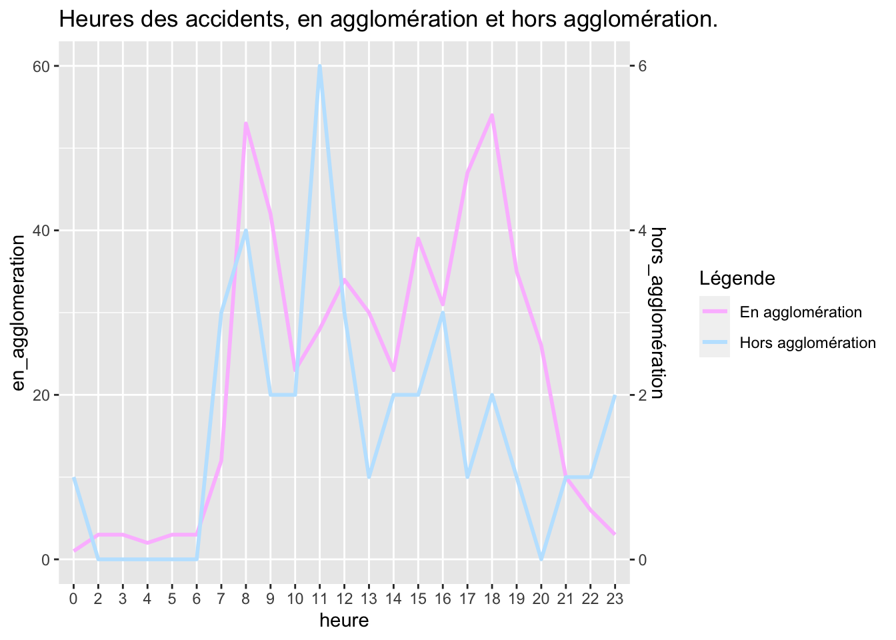

# glimpse(Accidents_velo_epci_sf)Accidents_velo_epci_sf <- Accidents_velo_epci_sf %>%mutate(mois =gsub("^0*", "", mois)) %>%mutate(mois :=as.integer(mois))Accidents_velo_epci_sf$mois <- month.name[Accidents_velo_epci_sf$mois] #transforme les nombre en noms de moisAccidents_velo_epci_sf$mois <-factor(Accidents_velo_epci_sf$mois, levels = month.name)# # #histogramme des accidents par mois# ggplot(Accidents_velo_epci_sf, aes(x = mois)) +# geom_histogram(stat = "count")+# labs(title = "Nombre d'accident par mois sur MMM", x = "Mois", y = "Nombre d'accidents")# # #barplot empilé# df_count <- Accidents_velo_epci_sf %>%# count(mois, an)# ggplot(df_count, aes(x = mois, y = n)) +# geom_col(aes(fill = an), width = 0.7)# #____________________________________________________________### GEOMLINE df_count <- Accidents_velo_epci_sf %>%count(mois) %>%mutate(total =sum(n))df_count$mois <-as.integer(df_count$mois)ggplot(df_count, aes(x = mois, y = n)) +geom_line(color ="#99c3f0") +geom_point(color ="#99d4f0", size =3) +# geom_line(aes(x = mois, y = total), color = "red", linetype = "solid") +labs(title ="Nombre d'accidents par mois", x ="Mois", y ="Nombre d'accidents") +scale_x_continuous(breaks =1:12, labels = month.name[1:12])

#____________________________________________________________#____________________________________________________________#DIAGRAMME EN LIGNE PAR MOIS ET PAR ANdf_count <- Accidents_velo_epci_sf %>%count(mois, an) %>%arrange(mois, an)couleurs <-c("#a6cee3", "#1f78b4", "#b2df8a", "#33a02c", "#fb9a99", "#e31a1c", "#fdbf6f", "#ff7f00", "#cab2d6", "#6a3d9a", "#ffff99", "#b15928")couleurs2 <-c("red", "green", "blue", "orange", "purple", "yellow", "pink", "brown", "gray", "black", "cyan", "magenta")ggplot(df_count, aes(x = an, y = n, group = mois, color = mois)) +geom_line() +labs(title ="Nombre d'accidents par mois et par année",x ="Année", y ="Nombre d'accidents") +scale_x_discrete(breaks =unique(df_count$an))+scale_color_manual(values = couleurs2)
#lumière lors de l'accident : Accidents_velo_epci_sf <- Accidents_velo_epci_sf %>%mutate(lum =case_when( lum =="1"~"Plein jour", lum =="2"~"Crépuscule ou aube", lum =="3"~"Nuit sans éclairage public", lum =="4"~"Nuit avec éclairage public non allumé", lum =="5"~"Nuit avec éclairage public allumé",TRUE~ lum ) )etiquettes =c("Plein jour", "Crépuscule", "Nuit sans éclairage public", "Nuit avec éclairage public non allumé","Nuit avec éclairage public allumé")ggplot(Accidents_velo_epci_sf, aes(x = lum, fill=lum)) +geom_bar(stat ="count") +scale_fill_manual(values =c("#e41a1c", "#377eb8", "#4daf4a", "#984ea3", "#ff7f00")) +labs(title ="Lumière au moment de l'accident", x ="Lumière", y ="Nombre d'accidents") +theme(axis.text.x =element_blank()) +guides(fill =guide_legend(title =""))

#horaires des accidents.Accidents_velo_epci_sf <- Accidents_velo_epci_sf %>%#on ne va garder que les heures et se débarasser des minutes.mutate(hrmn =substr(hrmn, 1, 2))ggplot(Accidents_velo_epci_sf, aes(x = hrmn)) +geom_histogram(stat ="count")+labs(title ="horaires", x ="heure", y ="Nombre d'accidents")
Warning: Ignoring unknown parameters: binwidth, bins, pad
#agglomération ou hors agglomérationAccidents_velo_epci_sf <- Accidents_velo_epci_sf %>%mutate(agg =case_when( agg =="1"~"Hors agglomération", agg =="2"~"En agglomération",TRUE~ agg ) )# ggplot(Accidents_velo_epci_sf, aes(x = agg)) +# geom_bar(stat = "count")df_count <- Accidents_velo_epci_sf %>%count(hrmn, agg)ggplot(df_count, aes(x = hrmn, y = n)) +geom_col(aes(fill = agg), width =0.7)+scale_fill_manual(values =c("#fcbfff","#bfe5ff"))+labs(title ="Heures des accidentents, en agglomération et hors agglomération.")+theme(legend.title =element_blank())

### intersection ;Accidents_velo_epci_sf <- Accidents_velo_epci_sf %>%mutate(int =case_when( int =="1"~"Hors intersection", int =="2"~"Intersection en X", int =="3"~"Intersection en T", int =="4"~"Intersection en Y", int =="5"~"Intersection à plus de 4 branches", int =="6"~"Giratoire", int =="7"~"Place", int =="8"~"Passage à niveau", int =="9"~"Autre intersection",TRUE~ int ) )# etiquettes = c("Hors intersection", "Crépuscule", "Nuit sans éclairage public", "Nuit avec éclairage public non allumé","Nuit avec éclairage public allumé")ggplot(Accidents_velo_epci_sf, aes(x = int, fill=int)) +geom_bar(stat ="count")+labs(title ="Type d'intersection sur l'accident", x ="type d'intersection", y ="Nombre d'accidents")+theme(axis.text.x =element_blank())+guides(fill =guide_legend(title =""))
# on observe que il y abeaucoup d'accidents qui ne sont pas dans des intersections. donc on va faire une colonne qui contient soit intersection soit non-inetrsection. Accidents_velo_epci_sf <- Accidents_velo_epci_sf %>%mutate(type_int =if_else(int !="Hors intersection", "Intersection", int))ggplot(Accidents_velo_epci_sf, aes(x = type_int, fill=int)) +geom_bar(stat ="count")+labs(title ="Type d'intersection sur l'accident", x ="type d'intersection", y ="Nombre d'accidents")+theme(axis.text.x =element_blank())+guides(fill =guide_legend(title =""))
lieux_epci <-merge(Accidents_velo_epci_sf, lieux_epci, by ="Num_Acc")###nature de la routelieux_epci <- lieux_epci %>%mutate(catr =case_when( catr =="1"~"Autoroute", catr =="2"~"Route nationale", catr =="3"~"Route Départementale", catr =="4"~"Voie Communales", catr =="5"~"Hors réseau public", catr =="6"~"Parc de stationnement ouvert à la circulation publique", catr =="7"~"Routes de métropole urbaine", catr =="9"~"autre",TRUE~ catr ) )ggplot(lieux_epci, aes(x = catr, fill=catr)) +geom_bar(stat ="count")+labs(title ="Catégorie de route sur l'accident", x ="catégorie de route", y ="Nombre d'accidents")+theme(axis.text.x =element_blank())+guides(fill =guide_legend(title =""))

# je voudrais croiser situ et vosp . l'un donne l'info si l'accident a lieu sur une route ou bien une voie spéciale. l'autre donne l'information si il y a une piste cyclable pas trop lointable(lieux_epci$situ)